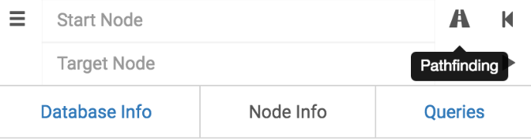

Pathfinding in BloodHound works similarly to how it works in your favorite maps software. Click on the road icon, and the 'Target Node' text box will pop down.

First, specify a 'Start Node'. This can be a user, a group, or a computer. BloodHound will autocomplete this field for you.
Next, specify a 'Target Node'. Again, this can be a user, a group, or a computer, and BloodHound will autocomplete this field for you.
Press the 'Play' button, and BloodHound will determine all of the shortest paths between your start node and the target node, if such paths exist. Then, BloodHound will display the path(s) in the graph drawing area.